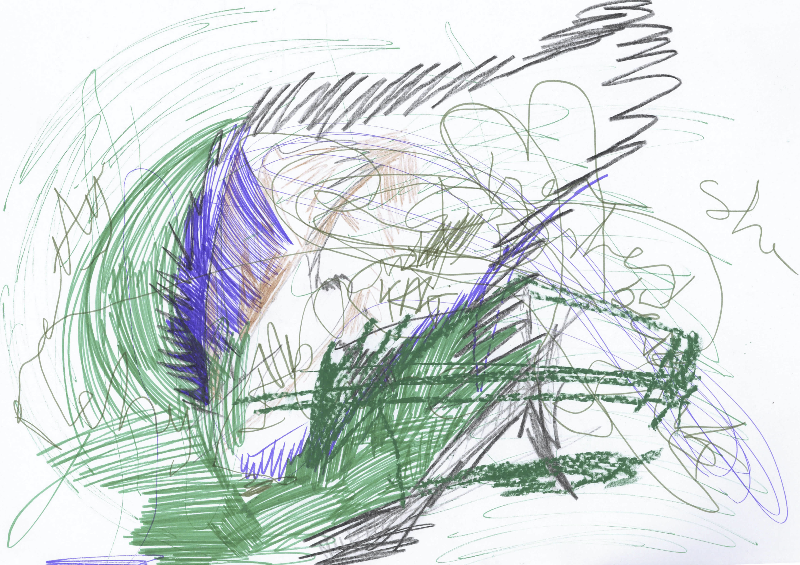
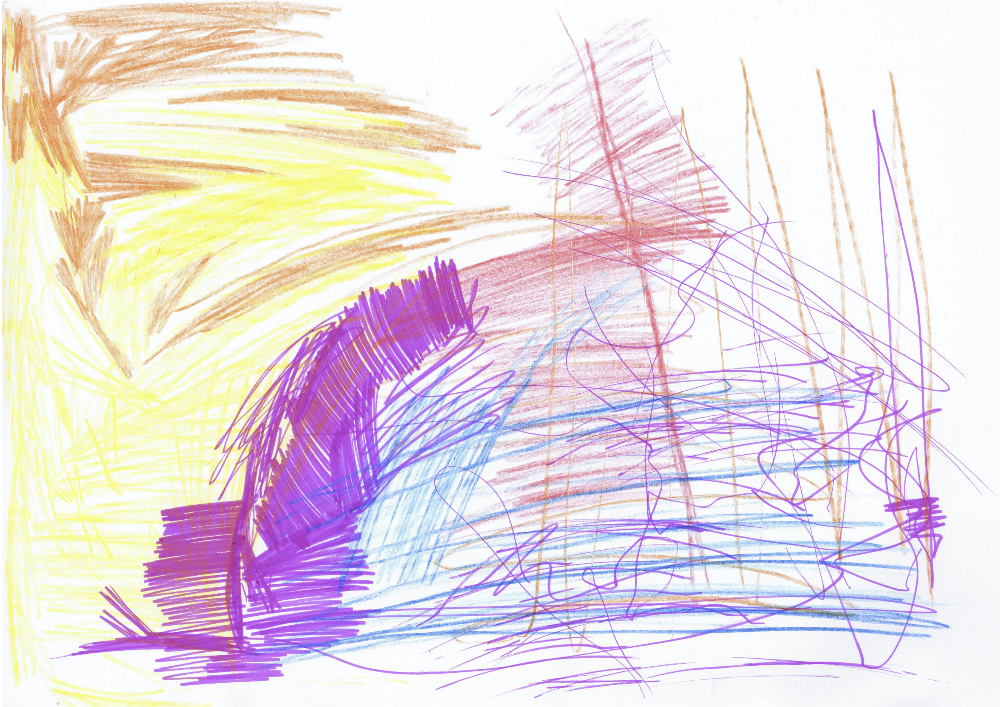
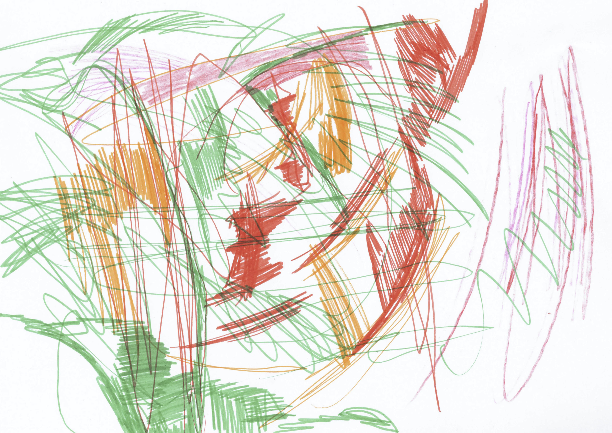
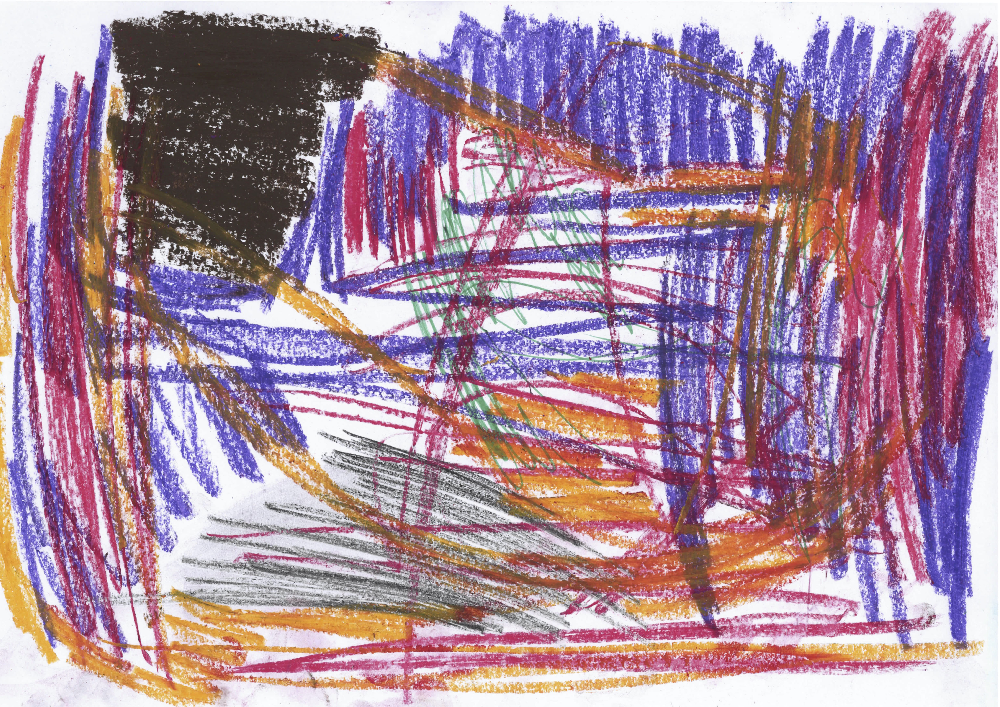
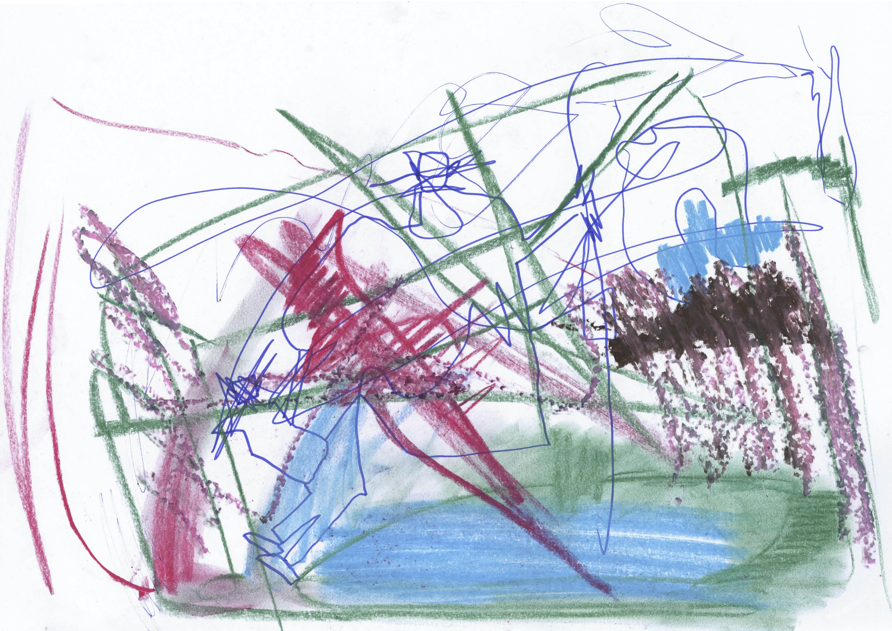
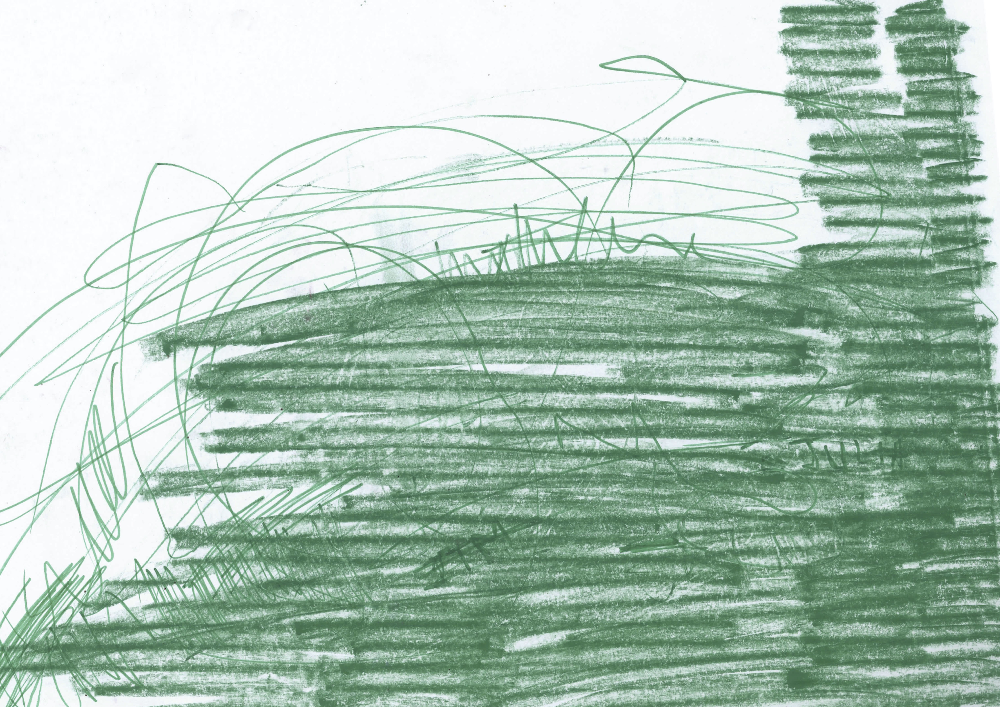

Geographic Melody






Geographic Melody, 2019, pencil on paper, 29,7 x 21 cm
Serie of 7 drawings, who reflects the language of the body and music emerge into a single object, a drawing. This serie was made, spontaneously, without any break while listening to techno music at the same time. Each drawing represents a very distinct music. It can translate the emotions that music evokes into lignes and doodles.